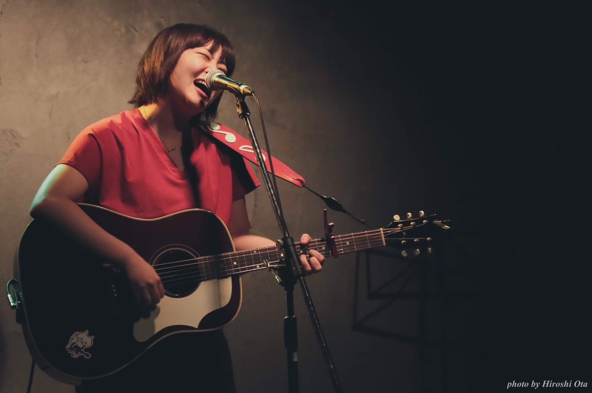

Biography
1995年生まれ 千葉県出身。
千葉県柏市をホームタウンとして、路上やライブハウスで活動開始。
東京、茨城、埼玉にも活動を広げている。
特に楽器がある音楽に特化したような家庭ではなかったが、
家族全員、何かをする時は鼻歌を歌うような家で育ち、小さい頃からとにかく歌うことが好き。
素直になれない心の内や、理想通りにいかないもどかしさを、
POPなメロディと半径1メートルの身近でリアルな言葉を使って歌いあげる。
笑顔と目の下のホクロがチャームポイント。

History
2016年 冬：千葉県柏市で初めて路上ライブをする。
2017年1月：柏studio WUUにて、ステージデビュー。
2017年4月：初の3曲入りの弾き語りでのCDを発売。（完売）
2018年5月：5曲入りバンド編成と弾き語りでの1stミニアルバム発売。
2018年12月：株式会社derive所属
2019年2月：TOKYOMXテレビ出演
2019年：6月：Zepp Divercity Tokyo 女子独身倶楽部OA
2019年9月：伯方の塩声優オーディション特別賞